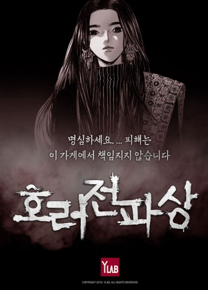
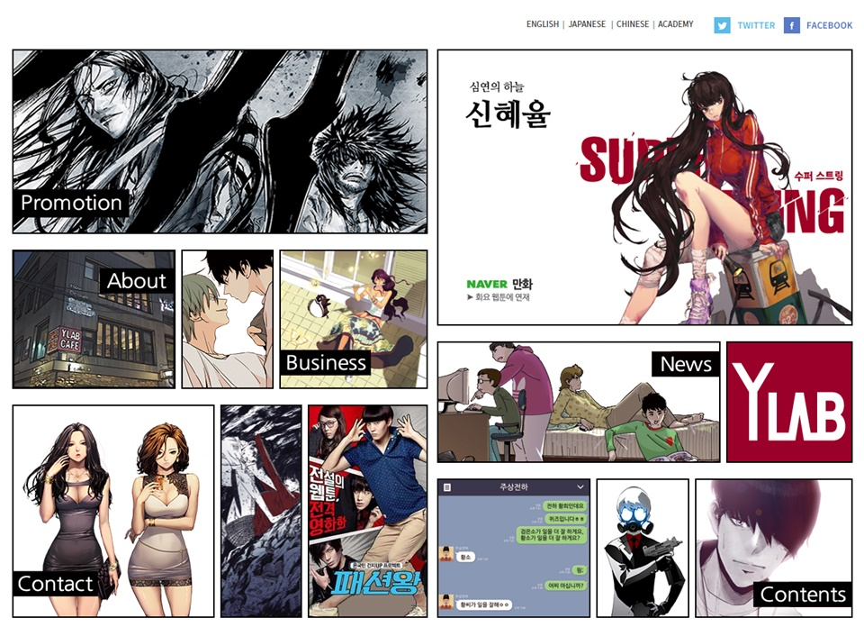
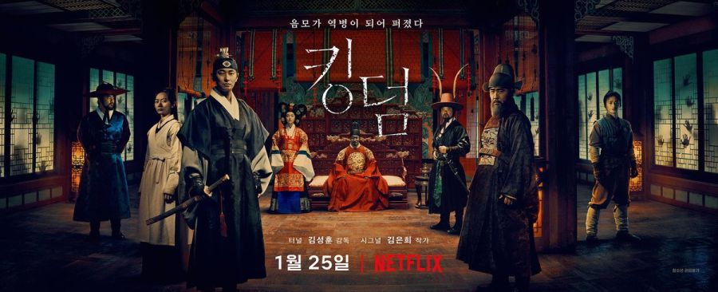
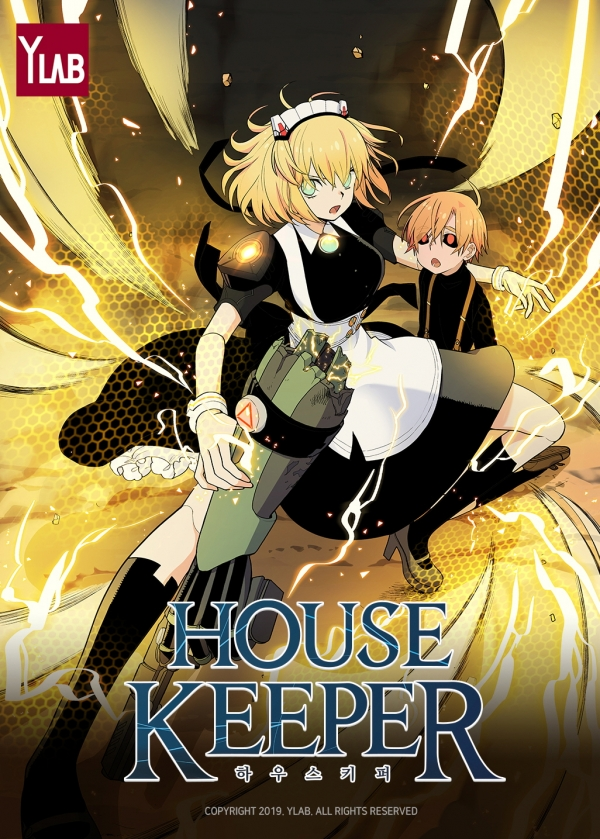
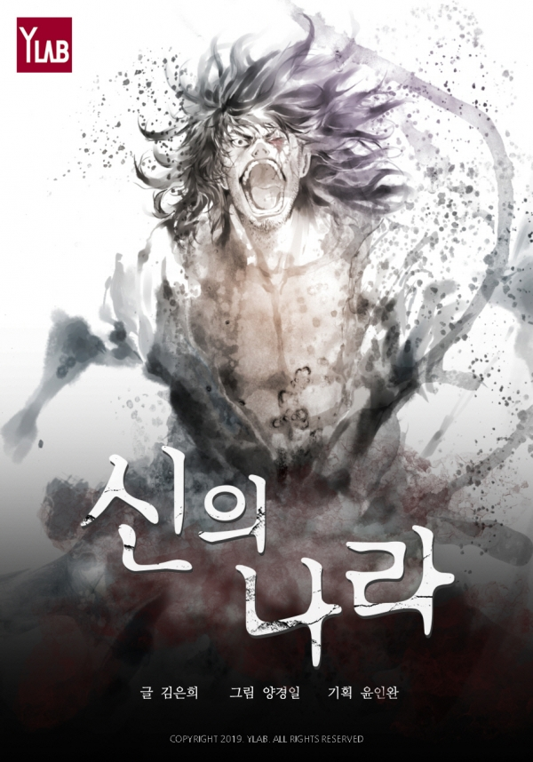
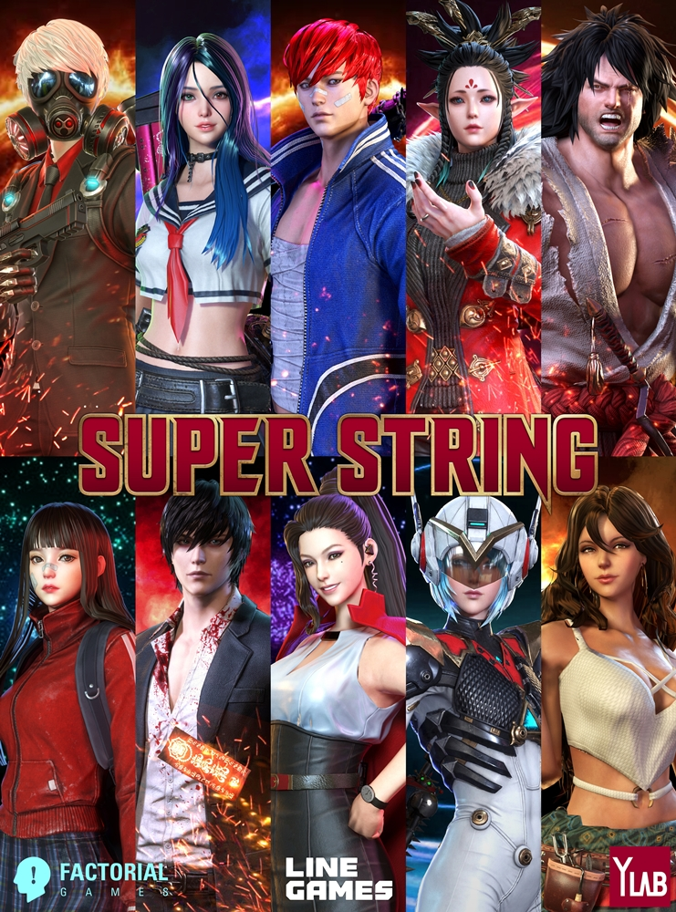

한국 웹툰은 ‘마블’이 될 수 있을까
만화적 상상력을 영상으로 구현하는 일은 쉽지 않다. 웹툰과 영상의 문법도 다르다. 또 웹툰 장르에 따라 영상화 가능성이 갈리기도 한다. 이에 대해 다음웹툰 이샛별 차장은 “영상화 관점에서 다양한 장르를 검토 중이지만, 기승전결이 없는 일상툰이 영상화하기 어려운 부분이 있었다”라면서도 “최근 OTT, 웹드라마 등 짧은 영상 포맷이 생기면서 일상툰 작품 영상화에 대해서도 가능성을 열어두고 있다”라고 말했다.
네이버웹툰 이희윤 사업팀장은 ‘신의 탑’, ‘갓 오브 하이스쿨’, ‘ 노블레스’ 등 판타지 장르가 일반적으로 영상화하기 어렵다 고 말 했 다 . 하지만 최근에는 ‘신과 함께’를 비롯해 판타지, SF 장 르 도 영상 화 시도가 이뤄지고 있다고 전했다. 또 현재 ‘신의 탑’과 ‘ 노블레 스’를 TV 애니메이션 시리즈로 개발 검토 중이라고 밝혔다.
2019.8.1 블로터닷넷더보기

슈퍼스트링 13번째 신작 ‘호러전파상’ 네이버웹툰 연재
와이랩이 제작한 자사의 웹툰 유니버스 ‘슈퍼스트링’ 신작 <호러전파상>이 6월 9일 네이버웹툰에서 연재를 시작했다. 해당 작품은 매주 일요일 업데이트 될 예정이다.
<호러전파상>은 정체를 알 수 없는 미모의 전파상 주인 ‘야크’가 필요한 물건에 의해 전파사에 찾아오는 ···손님들에게 고사양의 물건을 공짜로 주는 대신 몇가지 주의사항을 전하고 물건의 효과를 극대화해 자신의 욕망을 충족하기 위해 이를 어기는 손님들이 어떤 충격적인 결말을 맞이하게 될지를 보여준다.
19.6.10 뉴스플릭스 더보기
신석기녀, 멀티버스의 존재 재확인
신석기녀 68화에서 이재신의 모습을 한 홀로그램 AI가 다른 차원에서 만난 또 한명의 숙희를 언급했다.
이로써 슈퍼스트링 세계관 안에 멀티버스의 개념이 도입됐다는 것이 재확인 됐다.
이미 심연의 하늘 시즌5, 아일랜드 등에서도 멀티버스의 존재가 확인 된바있지만 슈퍼스트링 세계관 속에서 시간 순서상으로 가장 먼저 멀티버스의 존재를 확인한 것이 된다
19.5.28 더보기
네이버웹툰 연재 중인 와이랩 작품 ‘위장불륜’, 7월 일본에서 드라마 방영 예정
넷플릭스 <킹덤>의 원작 회사로도 유명한 주식회사 와이랩은 자사 웹툰 <위장불륜>이 일본 니혼테레비 드라마로 제작·방영될 예정이라고 밝혔다. 일본 드라마 <위장불륜>은 2019년 7월 수요일 황금시간대 드라마로 방영 예정이다.
<위장불륜>은 현재 국내 네이버웹툰, 일본 라인망가를 비롯 중국에 서도 연재중이다. 가족에게 비혼을 선언한 30대 여자 주인공 ‘ 쇼 코 ’ 가 홀로 여행을 떠난 한국행 비행기에서 한국남자 ‘ 조 반희 ’와 만나 게 되면서 펼쳐지는 로맨틱 코미디 웹툰이다. 우연 히 만 난 잘 생긴 연하남에게 무심코 ‘기혼자’라고 거짓말을 하게 되면서 , 불륜 아닌 불륜의 아슬한 사랑을 보여준다. 위장 불륜은 혼 밥을 즐겨 하고 혼 자 여행을 다니며 상처받고 싶지 않은 30대 여성들의 공감을 일으켰다.
2019.4.11 뉴스플릭스더보기
'신암행어사', 과거의 영웅이 현재에 등장하다
<신암행어사>의 경우에는 과거의 작품을 최근에 창설된 슈퍼스트링 프로젝트에 편입했기 때문이다. <아일랜드>를 같은 플랫폼에서 완결 내어 이 또한 슈퍼스트링 프로젝트에 편입한 윤인완과 양경일의 현 연재 작품에는 과거의 이야기를 현재의 삶에 어떻게 접목할 것인지에 대한 고민이 담겨있다. 요컨대 이것은 리메이크도 ···아니요재연재인데, 말하자면 과거의 망령을 현재에 살려낸 것이나 다름없으므로, 그 망령이 구천을 떠돌지 않고 현세에 적응할 수 있을지에 대한 의문이 우리에게는 있다.
그에 대한 첫 번째 발걸음. 고전이란 게 시대가 변해도 통용되는 의미를 품는 것이라면 이 <신암행어사>의 이야기는 확실히 고전이다. 작품의 주인공 문수는 멸망한 나라 쥬신의 상급관리이자 암행어사로, 세상을 떠돌며 악덕한 사람들을 혼내주는 역할을 하고 있다. 장르로 따지면 피카레스크에 속하는 이 작품에서 문수는 선한지 악한지 구분할 수 없게 나오며, 그럼에도 그가 아니라면 더 큰 악인 아지태를 죽일 수가 없다고 사람들은 말한다. 이때 아지태를 문수만이 죽일 수 있는 것은 문수에게 아지태의 술법이 통하지 않기 때문인데, 여기서 우리는 악은 악을 죽일 수 없다는 피카레스크의 새로운 논리를 보게 된다.
19.3.2 오마이뉴스더보기
시각효과 기업 위지윅스튜디오, 웹툰 제작사 와이랩과 손잡는다
시각효과(VFX) 기술 서비스 기업 위지윅스튜디오가 국내 웹툰 제작사 와이랩과 양해각서(MOU)를 체결하고 일부 지분을 취득했다고 7일 밝혔다.
시각효과(VFX) 기술 서비스 기업 위지윅스튜디오가 국내 웹툰 제작사 와이랩과 양해각서(MOU)를 체결하고 일부 지분을 취득했다고 7일 밝혔다.
위지윅스튜디오 관계자는 "이번 지분취득과 MOU 체결을 통해 위지윅이 가진 기술적 강점을 기반으로 콘텐츠 IP에 대한 사업영역을 확장하고 콘텐츠 시장 내 경쟁력을 강화할 것”이라고 했다.
2019.2.7 웹데일리더보기

와이랩, 벤처캐피탈 3개사로부터 40억 규모 투자 유치… 누적 투자액 70억
웹툰 제작사 와이랩이 지난달 네시삼십삼분의 전략적 투자 유치에 이어 캡스톤파트너스, 키움증권 등으로부터 40억원의 투자 유치를 했다. VIK로부터 30억원을 투자 받은 지 1년만이다.
와이랩은 작가의 저작권을 대행하는 기존 웹툰 에이전시들과 달리 IP(지적재산권)를 직접 보유하고 있는 유일한 웹툰 회사 다 . 신 암 행어사의 윤인완 작가를 주축으로, 소속 프로듀서 들이 작품 을 기획 하고 이에 대한 저작권을 작가들과 공유하는 형 태다. 이 러한 시스 템은 미국의 마블과DC 코믹스가 취하고 있는데 , IP 사업 을 회 사의 의사결정에 따라 제한 없이 진행할 수 있다는 강점이 있다.
2019.1.31 플래텀더보기

넷플릭스 '킹덤', 원작 만화 '버닝헬' 조선판 좀비물 통할까?
넷플릭스 드라마 ‘킹덤’의 티저 영상이 공개되면서 원작 만화에 관심이 모이고 있다. 내년 1월 베일을 벗는 넷플릭스 드라마 ‘킹덤’은 윤인완, 양경일 작가의 ‘버닝 헬-신의 나라’를 원작으로 하고 있다.
아울러 ‘시그널’ 작가 김은희 작가가 각본을 맡으면서 더욱 기대감이 높아지고 있다.
19.1.23 ET엔터테인먼트더보기

인간과 A.I, 좀비의 색다른 조합 ‘하우스키퍼’ 연재
"하우스키퍼"는 가정용 A.I ‘하스티’가 좀비 바이러스에 감염된 주인을 구하기 위해 전투용 A.I로 각성하며 벌어지는 이야기로, 평범한 인공지능 로봇이 단 한 명의 주인을 위해 전 인류와 전쟁하는 처절한 싸움을 다루고 있다. 그동안 흔히 볼 수 없었던 ‘인간, A.I, 좀비 바이러스’라는 색다른 조합이 독자들의 기대감을 ··· 증폭시킨다.
이번 신작은 네이버웹툰에서 인기리에 연재 중인 "부활남"의 채용택 작가가 글을, "선녀강림", "라온" 이후 일본에서 "비탄의 아 리 아 A A " 등을 연재하며 인기리에 활동하던 유현 작가가 작화 를 맡았 다. "하우스키퍼"는 유현작가의 국내 복귀작으로 섬세 한 그 림체는 "하 우스키퍼"의 완성도를 극대화했다. 독자들은 ‘빠 른 전개 와 참신 한 스토 리’, ‘대작의 기운이 느껴진다’, ‘전설이 돌아왔다’며 작품을 응원했다.
19.1.23 우리문화신문더보기

와이랩, 만화 ‘신의 나라’ 네이버 시리즈 연재
만화 ‘신의 나라’가 네이버 시리즈에서 연재된다. 만화 ‘신의 나라’는 2014년 웹툰 제작의 명가 와이랩이 발표한 작품으로서, 와이랩의 수장 윤인완 작가가 기획하고 드라마 장르물의 대가 김은희 작가가 스토리를, 만화계의 거장 양경일 작가가 작화를 담당해 호흡을 맞춘 작품으로 넷플릭스 오리지널 시리즈 ‘킹덤’의 원작이다.
‘신의 나라’는 조선시대 좀비물이라는 독특한 설정을 가졌으며 왕 세자가 반역자로 몰리며 펼쳐지는 서스펜스를 담고 있다. 와 이 랩 에 서 는 장르성이 두드러진다고 판단해 초기부터 글 로벌 만 화로 기획 하여 2014년 일본 소학관의 인기 잡지인 ‘빅 코 믹 스 피리츠 ’에 발표 했다. 발표 당시 참신한 소재와 반전 스토리 로 일본 독자들 사이에 서 큰 화제가 되었다.
와이랩은 만화와 드라마를 오가며 느낄 수 있는 오리지널리티와 각 색의 묘미를 극대화하기 위하여 드라마 방영에 앞서 1월 1 7 일 부 터 네이버 시리즈앱과 시리즈 홈페이지에서 ‘신의 나라’를 웹 툰 형태 로 연재한다. 이번 연재는 폭넓은 독자층과의 소 통하기 위해 전체 연령가 및 19세 연령가 총 2가지 버전으 로 제작 되었다. 네이버 시리즈에 서는 오픈 기념 프로모션으로 2월 21일 까지 ‘신 의 나라’ 웹툰 을 매일 1편씩 무료로 이용할 수 있는 ‘너에게만 무료’ 프로모션을 진행한다.
2019.1.16 베리스타알파더보기
심준경 와이랩 대표 인터뷰
“웹툰은 성장 잠재력이 큰 산업입니다. 무엇보다 한국이 주도할 수 있는 몇 안 되는 산업 중 하나라는 점에 매력을 느꼈죠.”
서울 합정동 와이랩스튜디오에서 최근 만난 심준경 와이랩 대표(사진)는 잘나가는 벤처캐피털리스트에서 웹툰 제작사 최고경영자(CEO)로 변신한 이유에 대해 ··· 이같이 설명했다.
19.1.15 한국경제더보기
기획형 웹툰시대 연 와이랩
신암행어사, 테러맨, 신석기녀, 부활남, 심연의 하늘, 캉타우, 아일랜드, 세상은 돈과 권력, 삼국지톡...이 웹툰들은 네이버웹툰에서 상위권을 차지하는 인기작이라는 점 외에 또 다른 공통점이 있다. 웹툰 배경에 박혀있는 '기획, 제작 와이랩'이란 로고다.
와이랩 이름으로 나오는 수많은 웹툰 작품들은 수백만 ··· 조회수를 자랑한다. 작가에 대한 지원이 남다른 덕분이다. 지난 해 엔 독 립 레이블(독자적으로 활동하는 소그룹)도 허용했다. 엔 터테 인먼 트 사의 레이블처럼 작가가 직접 작품 기획과 제작에 뛰어 들 수 있도 록 했다는 설명이다. ‘실질객관동화’ ‘조선왕조실 톡’으로 인기를 끈 웹툰 작 가 무적핑크를 주축으로 한 '핑크잼'이 독립 레이블의 대표적인 사례다.
18.12.29 한국경제더보기
이정문 화백 '철인 캉타우' 리메이크한 '캉타우' 매주 목요일 네이버웹툰에서 연재 시작
이정문 화백의 '철인 캉타우'를 리메이크한 '캉타우'가 매주 목요일 네이버웹툰에서 연재를 시작한다.
'철인 캉타우'는 '심술통'으로 유명한 이정문 화백이 1976년 발 표한 로봇 만화다. 빙하기를 맞아 긴 잠에 빠진 우주세력 오 크 타 와 스펠타. 먼저 깨어난 스펠타 군단이 지구를 정복 하기 위해 세 력을 키우고, 평범한 고등학생 ···강현이 잠들어있 던 오 크타 종족 카우 카와 로봇 캉타우를 깨우며 그들을 저지 하는 이 야기다 . 전례 없는 디자인과 스토리텔링으로 한국 형 로봇을 대표하 는 오리지 널 콘텐츠 로 알려져있다.
이에 원작 웹툰을 제작하고, 영화, 드라마, 게임 등 다양한 2차 사업을 진행한 경험이 있는 와이랩에서 글로벌 프로듀싱 시 스 템 을 도 입해 리메이크를 시작했다. 원작에 대한 분석, 새로운 스토 리, 작 화 와 컬러 등 약 3년에 걸친 투자를 통해 새로운 블 록버스 터 웹 툰으 로 재탄생했다.
18.8.16 영남일보더보기

라인게임즈, 와이랩 캐릭터 총출동한 '슈퍼스트링' 퍼블리싱 계약
라인게임즈 주식회사(이하 라인게임즈, 대표 김민규)는 팩토리얼게임즈(Factorial Games, 대표 이동규)가 개발 중인 모바일게임 '슈퍼스트링(Super String)'의 글로벌 퍼블리싱 서비스 계약을 체결했다고 밝혔다.
'슈퍼스트링'은 웹툰 제작사 와이랩(대표 심준경)의 '아일랜드'와 '신암행어사'를 비롯해 '부활남', '테러남', '심연의 하늘' , ' 신 석 기녀' 등 인기 웹툰 속 주인공들을 하나의 세계관으로 통 합 시켜 스 토리를 전개하는 것이 특징인 게임으로, 웹툰 팬들 사이 에서는 '아시 아판 어벤저스'로 불리고 있다.
2018.7.4 게임동아더보기
[사설] "중국 웹툰보다 불법 콘텐츠 도용이 더 무섭다"
불법 콘텐츠 유통으로 국내 콘텐츠업계 피해가 커지고 있다는 소식이다. 특히 웹툰은 저작권 침해가 가장 심각한 분야로 꼽힌다. 매달 3500만 명이 접속한 국내 최대 불법 웹툰 사이트 ‘밤토끼’가 지난해 폐쇄됐지만 정부 단속을 비웃듯 유사 사이트가 잇따라 생겨나고 있다. 유망 산업으로 꼽히는 웹툰이 만연한 저작권 침해에 발목 잡힌 형국이다.
웹툰 제작사 와이랩의 심준경 대표는 “중국 웹툰업체보다 불법 콘텐츠가 더 무섭다”고 토로했다. 우리나라는 웹툰 종주국으로 불리지만, 중국 업체들이 여러 작가의 협업 방식으로 국내 시장을 잠식하면서 상황이 달라지고 있다. 심 대표 말은 토종 웹툰들이 중국과 제대로 싸워보기도 전에 저작권 침해로 침몰하게 생겼다는 얘기로 들린다.
2018.1.28 한국경제더보기
와이랩 슈퍼스트링 신작 ‘신석기녀’, 네이버웹툰 연재
주식회사 와이랩은 자사의 웹툰 유니버스 ‘슈퍼스트링’ 신작인 ‘신석기녀’가 네이버웹툰의 수요 웹툰으로 연재를 시작했다고 3일 밝혔다.
‘신석기녀’는 지금까지 ‘심연의 하늘’, ‘아일랜드’에 등장했던 오 드아이의 여성 고등학생 캐릭터가 주인공인 작품이다. 해 당 캐 릭 터 는 세일러복 의상에 서로 다른 색의 두 눈동자, 엄청난 무 력 을 소유 하는 등 다양한 매력으로 슈퍼스트링의 여 러 작 품에 조커로 활약하 며 독자들의 활발한 논의를 이끌어 냈다.
‘신석기녀’에 참여하는 스태프들의 면면도 화려하다. ‘프린스의 왕 자’로 유쾌한 브로맨스를 선보였던 재아 작가가 스토리를, 일 본 의 유 명 만화 출판사인 강담사 및 치바테츠야만화상 출신 의 대형 신인 한 가람 작가가 작화를 맡았다. 여기에 국내에서 도 큰 인기를 끌었 던 ‘ 노다메 칸타빌레’의 담당자였던 ‘미카 와 카오 리’가 글로벌 프로듀 서로 참여하여 더욱 기대가 크다.
2018.1.3 뉴스와이어더보기
한국 웹툰과 영화의 거대한 공조, '슈퍼스트링' 시리즈
한국판 ‘마블 신화’가 시작되는 걸까. 10월 25일 서울 강남구 CGV 청담 씨네시티 웹툰과 영화를 아우르는 ‘슈퍼스트링’ 시리즈의 쇼케이스가 열렸다. 슈퍼스트링(Super String)이라는 세계관 아래 여러 웹툰이 연계하고, 이를 바탕으로 영화를 만들겠다는 계획이다. 이를 위해 ‘네이버 웹툰’과 웹툰 제작사 ‘와이랩’, 영화 제작사 ‘용필름’이 손잡았다.
와이랩은 이미 2016년부터 ‘테러맨’(한동우 글, 고진호 그림) ‘부활남’(채용택 글, 김재한 그림) 등의 웹툰을 통해 슈퍼스트링 시리즈를 펼치고 있다. 슈퍼스트링이란, 우주가 끊임없이 진동하는 끈으로 이루어져 있으며, 끈의 진동을 통해 영원히 성장과 수축을 반복한다는 ‘초끈이론’(Super-String Theory)에 뿌리를 둔 세계관을 말한다.
2017.10.25 중앙일보더보기
'부활남', SPP 웹툰어어드 대상 수상
콘텐츠 제작사 와이랩이 기획하고 채용택, 김재한 작가가 각각 글과 그림을 맡은 웹툰 ‘부활남’이 7일 서울 밀레니엄 힐튼 호텔에서 열린 SPP 웹툰 어워드에서 대상을 수상했다.
SPP 웹툰 어워드는 서울산업진흥원에서 주최한 행사로 2016년 이후 연재된 웹툰 중 창의력과 기획력이 뛰어난 ···작품을 골 라 대 상 1편과 최고창의상, 최고기획상 각 1편씩 총 3편을 시상 했 다. 다 양한 플랫폼에서 100편이 넘는 작품이 지원하였으며 결 선에는 총 10편 의 작품이 선정되었다.
2017.7.12 뉴스와이어더보기
신입·경력 디자이너 모시기 ‘한창’
디자인 전문 취업포털 사이트 디자이너잡에서 여름철 무더위를 맞이해 취준생 디자이너들을 위한 디자인 채용정보를 6일 공개했다.
㈜와이랩(출판 편집디자이너, 오는 11일까지), 등에서 인재를 모집 하고 있다. 채용 일정은 해당 기업 사정에 따라서 변경될 수 있 으 며 자세한 내용은 디자이너잡 홈페이지(designerjob.co.kr ) 를 참 고하 면 된다.
2017.7.12 대구신문더보기
와이랩, ‘슈퍼스트링 커뮤니티 사이트’ 오픈
이번에 오픈되는 전용페이지는 웹툰 유니버스 ‘슈퍼스트링 프로젝트’의 세부 내용을 확인할 수 있다. 웹툰 원작 소개 코너를 통해 ‘테러맨’, ‘부활남’, ‘신석기녀’와 같이 네이버웹툰에 연재 중인 슈퍼스트링 개별 작품뿐만 아니라, ‘프린스의 왕자’와 같은 완결 작품들에 대한 줄거리와 캐릭터 소개도 담고 있다.
아울러 방대한 프로젝트를 암시하는 소재 설명과 개별 작품들의 연 관성을 추측하게하는 타임라인은 전용페이지 내에서 독자 들 이 슈 퍼 스트링 유니버스를 이해하고 즐길 수 있도록 돕고 있다. 이 뿐 만 아 니라 슈퍼스트링 프로젝트에서 동시다발적으로 진 행되고 있는 게 임, 영화, 드라마와 같은 2차 사업에 대한 최신 뉴스까지 확인 가능하다.
2017.6.14 ITDAILY더보기
기대작 슈퍼스트링, 주요 캐릭터 6종 추가
네시삼십삼분(대표 장원상, 박영호, 이하 4:33)은 게임 개발사 팩토리얼게임즈(대표 이동규)와 웹툰 제작사 와이랩(대표 윤지영)이 공동 개발 중인 모바일 게임 ‘슈퍼스트링(가칭)’의 주요 캐릭터 6종을 추가 공개했다.
'슈퍼스트링’은 유명 웹툰 ‘아일랜드’, ‘신암행어사’, ‘부활남’, ‘ 테러맨’, ‘심연의 하늘’ 등에 나오는 주인공들이 하나의 세 계 관 아 래 모두 등장하는 통합 프로젝트로 웹툰 팬들 사이에 서는 ‘ 아시 아 판 어벤져스’로 불리고 있다.
이번에 공개된 캐릭터는 아일랜드의 ‘미호’와 ‘반’, 웨스트우드 비 브라토의 ‘코넬리아’, 나의 밤은 당신의 낮보다 아름답다의 ‘ 하 시 우 ’ , 버닝헬의 ‘쥬’, 그리고 향후 연재될 신석기녀의 ‘오 드아 이’ 까지 총 6종이다.
'미호’와 ‘반’은 1997년 첫 연재 이후 현재까지 한국과 일본 양국 에서 큰 인기를 끌고 있는 판타지 호러 웹툰 아일랜드의 두 주 인 공이다. ‘코넬리아’는 서정적 음악 드라마 웨스트우 드 비 브라 토의 주인공으로, 테러맨에 깜짝 등장하며 화제를 모으기도 했다.
2017.6.8 중앙일보더보기
와이랩, 무적핑크 작가를 주축으로 산하 독립 레이블 ‘핑크잼’ 설립
주식회사 와이랩이 인기 작가 무적핑크를 주축으로 한 독립 레이블 ‘핑크잼’을 설립한다.
와이랩은 국내 최초로 프로듀싱 시스템을 도입, 양질의 웹툰을 제 작해 온 콘텐츠 전문 제작 회사로 무적핑크 작가의 소속사이 기 도 하 다 . 웹툰 작가의 개성이 반영된 새로운 레이블을 설립 하는 것 역시 와이랩과 무적핑크 작가가 최초다.
와이랩은 작가들이 글로벌 프로듀서의 프로듀싱 하에 작품을 제작 하는 단계에서 더 나아가 직접 프로듀싱 할 수 있는 단계 까 지 성 장 하도록 하는 것이 와이랩의 목표라며 무적핑크 작가의 레이 블을 시작 으로 작가들 개인의 특성이 반영된 다채로운 작품 을 개 발하 는 데 지원을 아끼지 않을 것이라고 이번 독립 레이블 설립의 배경을 밝혔다.
2017.5.24 뉴스와이어더보기
4:33, 만화제작사 와이랩에 투자…웹툰 IP 확보
네시삼십삼분(대표 장원상, 박영호)은 만화전문제작사 와이랩(대표 윤지영)에 전략적 투자를 단행했다고 26일 밝혔다.
이번 투자를 통해 4:33은 와이랩에서 제작하는 30종에 이르는 만화·웹툰의 지식재산권(IP)에 대한 독점적 모바일게임 개발 권리와 글로벌 판권을 확보했다고 설명했다. 또 제3자에게 와이랩 IP를 활용한 게임 개발 및 서비스 권한을 부여할 수 있는 ‘IP 라이선스 대행’ 권한도 보유하게 됐다. 향후 4:33은 지난 10월 모바일게임 개발 계약을 체결한 ‘슈퍼스트링’과 함께 와이랩의 웹툰과 캐릭터를 활용한 다양한 모바일 게임을 선보일 계획이다.
2016.12.26 매일경제더보기
만화제작사 와이랩, 벤처캐피탈 출신 CFO 영입
만화 전문 제작사인 와이랩(YLAB)이 최근 벤처캐피탈 심사역 출신의 최고재무책임자(CFO)를 영입했다. 회사 설립 초기 매출 수십억 원을 달성할 정도로 가파른 매출 성장세를 기록하고 있는 상황에서, 향후 외부 투자나 상장 추진 등을 염두에 두고 벤처캐피탈 출신 CFO를 영입한 것으로 보인다.
3일 벤처캐피탈업계에 따르면 프리미어파트너스의 심준경 차장이 와이랩의 CFO로 자리를 옮겼다. 심준경 신임 CFO는 향후 와이랩 의 재 무 전반을 책임지게 될 예정이다. 심사역 시절부터 웹툰 및 콘 텐츠 산업에 관심 갖고 지켜봐온 만큼 회사 내 다양한 영 역에서 활발한 활동 을 보여줄 수 있을 것으로 기대된다.
2016.11.7 더벨더보기
윤인완·양경일 콤비의 ‘아일랜드’, 부산국제영화제에서 2부 공개
윤인완, 양경일 작가 콤비의 ‘아일랜드’가 새로운 엔딩으로 찾아 온다.
만화전문제작사 와이랩(대표 윤지영)은 8일 부산국제영화제의 E-IP 피칭에서 윤인완, 양경일 콤비의 웹툰 ‘아일랜드’ 2부를 최 초 로 공개했다고 밝혔다.
‘아일랜드’는 두 작가의 장편만화 데뷔작으로, 대한민국 수출만화 대상 대상을 수상하고 일본에 진출하는 등 엄청난 인기 를 끌 었 던 판타지 스릴러 장르의 만화다. 현재 디지털 리마스 터링 을 거쳐 웹툰 으로도 연재 중이다.
E-IP 피칭에서는 두 작가가 ‘신암행어사’로 일본에 진출하며 아쉽게 마무리되었던 1부의 뒷 내용 일부가 공개됐다. 아일랜드 2 부 는 웹 툰 세대에 발맞추어 세로 스크롤 형식과 올 컬러로 제작된다.
2016.10.9 뉴스와이어더보기
와이랩, 콘텐츠 창의인재 프로젝트 성공리에 마쳐
만화전문제작사 와이랩이 2015 콘텐츠 창의인재 동반사업 해단식을 갖고 그 동안의 성과를 발표했다.
이번 창의인재 프로젝트는 지난 2015년 8월부터 올해 2월까지 7개월에 걸쳐 이루어 졌으며, <신암행어사>의 윤인완, <찌질의 역사>의 김풍, <조선왕조실톡>의 무적핑크 작가 등 웹툰 및 웹드라마 분야에서 인정받는 11명의 전문가들이 멘토로 참여했다. 창의 인재로 선발된 22명의 멘티들은 각종 공모전에서 수상하고 기성 작품 제작에 직접 참여하는 등, 여러 분야에서 다양한 성과를 거두었다.
이강현 멘티(멘토 노효정)가 한국콘텐츠진흥원의 ‘2015 대한민국 스토리 공모대전’에서 <불의 전쟁>으로 우수상을 수상하였 으 며 , 서 혜림, 정겨운 멘티(멘토 김상영, 방재선)가 서울영상위 원회 ‘제 4 회 영상크리에이티브 멀티마켓’에서 <메시아>로 KT H 아 디이 어상을 공 동 수상하는 등 다양한 방면에서 뛰어난 실적을 보였다.
2016.2.25 플래텀더보기
일본 스타편집자, 한국 웹툰 프로듀싱…와이랩 영입
다음달 네이버에 연재되는 신작 웹툰에 일본의 만화 편집자가 프로듀서로 참여한다.
현지 유명 만화가 우라사와 나오키의 ‘해피’와 에가와 타츠야의 ‘ 도쿄대 이야기’ 담당 편집자인 에가미 히데키(57)가 그 주인공이다.
18일 만화 콘텐츠 제작 전문회사 와이랩은 “일본의 대형 출판사 쇼 가쿠칸에서 인기 주간지 ‘빅 코믹 스프리츠’의 편집자이자 ‘월간 I K K I ’ 편집장을 역임한 에가미 히데키를 와이랩의 프로 듀 서로 영입 했다 ”고 밝혔다.
2015.11.18 중앙일보더보기